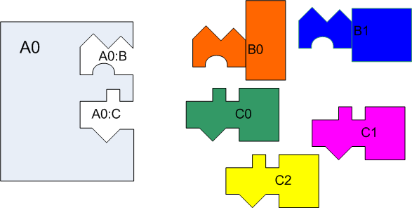
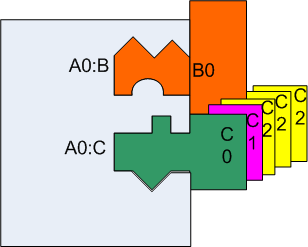

This document is intended to explain the how to use the Teaching Machine Plug-In System from a general point of view. That is, it does not explain the particular interfaces that represent the services provided to the Teaching Machine by its plug-ins, nor the particular interfaces that represent the services provided by the Teaching Machine to its plug-in. These interfaces are explained in the following companion documents:
A component is a "modular part of a system design that hides its implementation behind a set of external interfaces. Within a system, components satisfying the same interfaces may be substituted freely". [0]
The Teaching Machine is a component-based software system in which certain components, which we call hosts, are able to create and use other components, which we call plug-ins.
Here are two motivating examples:
Figures 0 and 1 illustrate the situation. They also show that host A0 has two "jacks", which are named slots into which other components can be placed. We'd like to be able to configure A0 to use either plug-in B0 or plug-in B1 in it's A0:B "jack" and to use any number of plug-ins from the set {C0, C1, C2} in its A0:C jack.
The "shape" of each jack is defined by two interfaces. One interface, the "plug-in interface", describes the services that the plug-in provides to its host. The second interface, the "context interface", describes the services the host provides to its plug-in. We can imagine method invocations flowing into the plug-in through the top (plug-in) interface and flowing out of the plug-in through the bottom (context) interface.
 |
 |
We can replace plug-in B0 with plug-in B1 at various times.
BInterface b = new B0() ;
BInterface b = new B1() ;
BFactoryInterface bFactory = new B0Factory() ;
...
BInterface bx = new bFactory.createBComponent() ;
...
BInterface by = new bFactory.createBComponent() ;
...
with
BFactoryInterface bFactory = new B1Factory() ; ... BInterface bx = new bFactory.createBComponent() ; ... BInterface by = new bFactory.createBComponent() ; ...The disadvantages of replacement at coding time are (a) that it can not be done by the end-user and (b) it disrupts the code base -- each configuration of the plug-ins requires a different version of the host.
If A can use B without mentioning (i.e., having hard-coded within it) the name of the classes that make up B, then A uses B "anonymously". "Use" really means: creating the component, storing pointers to it, and/or invoking its methods. Thanks to Java's interface concept we can store pointers to an object without mentioning its class and we can invoke its methods without mentioning its class. However there is no simple way to create objects without depending on its class. Of course, we can replace a call
BInterface b = new B0( bContext ) ;
with a call to a factory object
BFactoryInterface bFactory = new B0Factory() ;
BInterface b = bFactory.create( bContext ) ;
However, this is just moving the problem back one step as we now have to mention the name of the appropriate factory. Our code no longer depends on B0, directly, but it still depends on B0 indirectly via B0Factory, which presumably contains a call to B0's constructor.
Nevertheless, using a factory is an improvement for three reasons. (a) It allows us to concentrate the dependence problem in one spot, even if BInterface objects are created in multiple places. (b) It also allows us to employ the Abstract Factory pattern [1] when needed. The Abstract Factory pattern uses one factory to construct a suite of compatible objects. For example:
WindowFactoryInterface windowFactory = new XWinFactory() ;
WindowInterface window = windowFactory.createWindow( windowContext ) ;
ScrollBarInterface scrollBar = windowFactory.createScrollBar( window ) ;
(c) Creation of factories is, in general, simpler than creation of plug-ins. The plug-in's constructor might take parameters of any number and type. We might even want to give a choice of variety of constructors for each plug-in class. Furthermore contructors can throw arbitrary exceptions. Usually factories don't need constructor parameters, and in the cases where they do, they can be fairly simple in nature. Furthermore there is little reason to throw an exception while constructing a factory. Point (c) is not important if we use coding time replacement, but it is important if we use run-time replacement. It is advantageous if the things you create via reflection are simple and uniform to create.
Aside: Fans of the Gamma et al. Design Patterns book [1] will recognize that we are using their Factory Method pattern. What I've been calling a "plug-in", they call a "product"; and what I've been calling a "factory", they call a "creator".
The TM Plug-In System implements run-time replacement of components. We call these components "plug-ins". The TM Plug-In System confines itself to problems of anonymous creation of plug-in factories, as Java's interface concept handles anonymous messaging of plug-ins and anonymous storage of pointers to plug-ins quite adequately.
As will be seen in detail below, we'll replace the lines
BFactoryInterface bFactory = new B0Factory() ;
BInterface b = bFactory.create( bContext ) ;
of the coding-time solution with (roughly) the following code
BPIFactoryInterface bFactory = PlugInManager.getSingleton().getFactory( "A0:B" ) ;
BPlugInInterface b = bFactory.createPlugIn( bContext ) ;
to get a run-time solution. The PlugInManager object is responsible for maintaining the mapping from strings, such as "A0:B", to classes, such as B0Factory or B1Factory. The strings are called "jack names" and we say that the given factory is plugged into the jack. Initially the mapping is established by reading a configuration file; we also provide a GUI that lets the user interactively change the mapping.
(The fine print: In fact creating a factory is a bit more complex than the above single line suggests; there are more parameters to the getFactory method and there are exceptions to worry about; but, in essence, it is this simple. All the nasty details will be explained later)
Another aspect of plug-ins, touched on in the previous section, is that we might want more than one plug-in to provide the same service at once. Suppose that component A0 uses other components to provide views (i.e. visual representation) of some data. Well we might want to show the user multiple views at once. A0 might use components C0, C1, C2 all at the same time. Furthermore, if each C2 object provides a view along a single 3-D axis, we might want 3 of them. If we used coding-time replacement, we might write part of A0 like this:
CInterface [] view = new CInterface[5] ;
view[0] = new C0(context) ;
view[1] = new C1(context) ;
view[2] = new C2("x", cContext) ;
view[3] = new C2("y", cContext) ;
view[4] = new C2("z", cContext) ;
If we wanted to use factories, we could code it like this:
CPIFactoryInterface[] viewFactories = new CPIFactoryInterface[]{
new C0Factory(),
new C1Factory(),
new C2Factory("x"),
new C2Factory("y"),
new C2Factory("z") } ;
CInterface [] view = new CInterface[ viewFactories.length ] ;
for( int i = 0 ; i < view.length ; ++i )
view[i] = viewFactory[i].createPlugIn( cContext ) ;
Using the TM plug-in system, we can plug several components into the same "jack" to achieve this effect. A0 can be coded oblivious to the number of --and classes of-- factories that are plugged into its "A0:C" jack. Using the TM Plug-In System, (and again ignoring some of the details) the code we'll write in A0 will look roughly like this:
List<CPIFactoryInterface> viewFactories
= PlugInManager.getSingleton().getFactoryList( "A0:C" ) ;
CPlugInInterface [] view = new CPlugInInterface[ viewFactories.size() ] ;
for( int i = 0 ; i < fs.size() ; ++i ) {
view[i] = viewFactories.get(i).createPlugIn( cContext ) ;
Each category of plug-ins is typically defined by three interfaces. These are:
If the factory implements the Abstract Factory pattern [1] with n different kinds of products, then there would be one factory interface but (typically) n plug-in interfaces and up-to n context interfaces. (As the Window example shown earlier illustrates, the same interface might play more than one role; in that case a window object provides context to a scrollbar.)
When we don't have the Abstract Factory pattern (i.e. there is only one product type), the convention is to name the factory method createPlugIn. This is only a convention, you can call factory methods whatever you want.
Aside: As a result of the use of factories, instances of PlugInManager do not manage plug-ins at all, but rather factories. Thus the class is, perhaps, somewhat misnamed. [Perhaps some day we will rename is as PlugInFactoryManager.]
Let's look at an example. Recall that component A0 can host plug-ins of kind C. These are intended to represent some sort of view on some sort of data. The plug-in interface and the context interface might be given as
public interface CPlugInInterface {
public java.awt.Component getComponent() ;
...
}
public interface CContextInterface {
public SomeKindOfData getData() ;
...
}
Finally the factory interface declares the factory method
public interface CPIFactoryInterface extends tm.plugins.PlugInFactory {
/** Factory method. */
public CPlugInInterface createPlugIn( CPlugInContext theData ) ;
}
Let's continue the example of the previous section. We need three implementations of the plug-in interface. I'll assume that they are given by classes C0, C1, and C2. We also need 3 factory classes for constructing plug-ins of types C0, C1, and C2 respectfully. We can create three implementations of the factory interface, one for each of C0, C1, and C2. (We don't implement the context interface, of course; it is the job of the host designer to implement that.) Here is the first factory
public class C0Factory implements CPIFactoryInterface {
private static C0Factory singleton = null ;
private C0Factory() {}
static public C0Factory createInstance( String ignored ) {
if( singleton == null) singleton = new C0Factory()
return singleton;
}
public CPlugInInterface createPlugIn(CPlugInContext context) {
return new C0( context ) ;
}
public Requirement[] getRequirements() {
return new Requirement[0];
}
}
You can see that the createPlugIn method is implemented to create a C0 object. You can also see that the factory must be created using a static method called createInstance. The plug-in system will call the createInstance method to create the factory objects. (The rationale for using a static method in preference to a constructor is that it allows the factory objects to be singletons, if that is the wish of the designer.) The createInstance method takes a string parameter which, in this case is ignored. [To do: In the future, the parameter to createInstance may be more flexible, e.g. to allow 0 or more string parameters. Until then there has to be exactly one parameter and it must be of type string.]
The getRequirements method is used to indicate what kinds of plug-ins C0 objects will need. It will be described later. In this case, C0 is not a host, so it has no requirements.
The C0 class, although it is an actual plug-in class, is not particularly interesting for our purposes. Its interface depends on the needs of component A0 and its implementation depends on what it does. For the example, it is sufficient to assume C0 is some class that implements CPlugInInterface and CPlugInInterface represents some service that component A0 needs other components to do for it. The content of the CPlugInInterface and how C0, in particular, implements it are very important to the designers of the A0 and C0 components; but not to us. We are interested in how the C0 objects get created, but once they are created, the plug-in system has no further role. There are no particular constraints on the plug-in classes; in particular there is no single interface that all plug-in objects must implement. Looking just at a plug-in class you would never know that it is a plug-in class.
C1Factory is similar to C0Factory, except it creates C1 objects rather than C0 objects.
C2Factory is a bit different. Its constructor take a string parameter, and so it can not be a singleton. This string parameter's value is the same as the parameter passed into the createInstance method. Factory classes can use this string parameter for any purpose. In this particular example, it is simply passed on to the plug-in object. Ultimately this string parameter will be supplied by the user who is configuring the set of plug-ins for their system. This extra parameter allows the same factory class to be reused to create any number of different factory objects that can have slightly different behaviours.
public class C2Factory implements CPIFactoryInterface {
private String parameter ;
private C2Factory(String parameter) { this.parameter = parameter; }
static public C2Factory createInstance( String parameter ) {
return new C2Factory( parameter) ;
}
public CPlugInInterface createPlugIn(CPlugInContext context) {
return new C2( parameter, context ) ;
}
public Requirement[] getRequirements() {
return new Requirement[0];
}
}
Normally the registration of plug-ins is done initially via a GUI. For our example system, we will create the following registrations.
| Jack Name | Class | Parameter |
| Main:A | A0Factory | "" |
| A0:B | B0Factory | "" |
| A0:C | C0Factory | "" |
| A0:C | C1Factory | "" |
| A0:C | C2Factory | "x" |
| A0:C | C2Factory | "y" |
| A0:C | C2Factory | "z" |
The convention for jack names is the name of the component that requires (creation of) the plug-in, a colon, and then the name of the role that the plug-in will play.
In the example, I've assumed that A0 is itself a plug-in to the Main component.
The registrations are recorded in a singleton object of class PlugInManager. The PlugInManager is responsible for creating the factory objects the first time they are needed.
What about the host A0? How do we code it? The whole point of this exercise is to create plug-in objects without using the "new" operation. Instead A0 asks the PlugInManager singleton object to return a plug-in factory. (I say "return" rather than "create", as the manager creates factories only as needed and caches the factories.)
Now in component A0, we can create the B component with the following code, the purpose of which is to initialize variable bPlugIn of type BPlugInInterface:
try {
// 0. Obtain the plug-in manager
PlugInManager thePlugInManager = PlugInManager.getSingleton() ;
// 1. Obtain a factory object from the plug-in manager
BPIFactoryInterface factory
= thePlugInManager.getFactory( "A0:B", BPIFactoryInterface.class, true ) ;
// 2. Construct a new plug-in from the factory
bPlugIn = factory.createPlugIn( bContext ) ; }
catch( PlugInNotFound ex ) {
...deal with it... }
The key call here is to PlugInManager.getFactory (line 1.); it returns a factory capable of creating the plug-in.
The call to getFactory can fail in numerous ways.
In all cases the failure is reported with an exception of type PlugInNotFound.
The above sequence works fine when the host component expects there to be exactly one plug-in for the jack name. If zero or one plug-in factories are expected we can modify the sequence slightly:
try {
// 0. Obtain the plug-in manager
PlugInManager thePlugInManager = PlugInManager.getSingleton() ;
// 1. Obtain a factory object from the plug-in manager
BPIFactoryInterface factory
= thePlugInManager.getFactory( "A0:B", BPIFactoryInterface.class, false ) ;
// 2. Construct a new plug-in from the factory
bPlugIn = factory==null ? null : factory.createPlugIn( bContext ) ; }
catch( PlugInNotFound ex ) {
...deal with it... }
When more than one factory may be plugged-into the jack, we use a sequence like the following, the purpose of which is to initialize an array cPlugIns:
try {
// 0. Obtain the plug-in manager
PlugInManager thePlugInManager = PlugInManager.getSingleton() ;
// 1. Obtain a list of factory objects from the plug-in manager
List<CPIFactoryInterface> factories
= thePlugInManager.getFactoryList( "A0:C", CPIFactoryInterface.class, false ) ;
// 2. Construct new plug-ins from the factories
cPlugIns = new CPlugInInterface[ factories.size() ] ;
for( int i = 0 ; i < fs.size() ; ++i ) {
cPlugIns[i] = factories.get(i).createPlugIn( cContext ) ;
catch( PlugInNotFound ex ) {
...deal with it... }
The getFactoryList method is similar to getFactory, except it returns a list of factories. Not surprisingly, it does not fail when there is more than one factory registered. Depending on its third parameter (isMandatory), it will either fail or return an empty list, should there be no factories registered.
The existence of certain plug-ins in the system might place requirements on the existence of other plug-ins in the system. For example an "executive" plug-in might require exactly one "model" plug-in and 1 or more "view" plug-ins. Furthermore, the model plug-in factory must implement a particular interface (extending PlugInFactory) while the view plug-in factories must implement a different interface. In our running example, suppose that the A0 component is a plug-in created by a factory class A0Factory. Let's further suppose that the A0 plug-in requires there to be exactly 1 B components, whose factory must implement BPIFactoryInterface, and any number of C components, whose factories all must implement CPIFactoryInterface. It would be nice if these requirements could be stated and checked for fulfillment when the set of plug-ins is specified. This is done via the getRequirements method of the factory classes. We would write A0Factory as follows
public class A0Factory implements APIFactoryInterface {
private Requirement[] requirements = new Requirement[] {
new Requirement("A0:B", BPIFactoryInterface.class, true, false ),
new Requirement("A0:C", CPIFactoryInterface.class, false, true ) } ;
public APlugInInterface createPlugIn() {
return new A0();
}
public Requirement[] getRequirements() {
return requirements ;
}
}
The getRequirements method returns an array of two Requirement objects. The first represents that A0 requires that a jack named "A0:B" be filled by exactly one plug-in and that its factory implements BPIFactoryInterface. The second represents that that A0 requires that a jack named "A0.C" be filled by any number of plug-ins, but that they all have factories that implement CPIFactoryInterface. The parameters to the constructor of Requirement are as follows:
That the requirements are fulfilled is checked by the GUI, so that violations can be reported to the user, as he or she specifies a set of plug-ins. For example, if you unplug the last factory from jack "A0:B", you will be warned. If you plug a factory into the "A0:C" that does not implement CPIFactoryInterface, you will be warned. The GUI also checks that the factory classes actually exist and can be instantiated via createInstance.
The consistency of the requirements as stated in the factory vs the reality coded into the host is not checked. This is left to the programmer. For example, the requirement for jack "A0:C" says that multiple factories can be plugged into that jack. But I could still make a call to getFactory with a first argument of "A0:C" instead of calling getFactoryList. Similarly, I could call getFactoryList and ask for a factory of the wrong type. In this case, though, there would almost certainly be a compile-time type error reported.
What about the requirements of the root component?. In every system of components, there has to be at least one component that is the root of the host/plug-in tree. It is not itself a plug-in, but it will have requirements. The trick is to create a factory class that represents this component. In the Teaching Machine, it is called TMBigAppletPIFactory. This root factory has requirements and should be registered, but it does not need a createPlugIn method as it is not actually used as a factory! [Todo. Consider an interface PlugInHost]
In this section, I'll quickly summarize the steps you need to take to accomplish various tasks.
You need one interface for the factories and one for the plug-ins. E.g.,
import tm.plugins.PlugInFactory ;
public interface MyPIFactoryIntf extends PlugInFactory {
public MyPlugInInterface createPlugIn( ...parameters as needed... ) ;
}
and
public interface MyPlugInInterface {
...methods and constants your component may use...
}
Note that the name "createPlugIn" can be changed to whatever you like, "createView", "createModel", "createBob", ... . Actually you can have more than one create routine, in which case you are using the Abstract Factory pattern [1].
It is a good idea (considering software evolution) if the "parameters needed" for plugIn creation are limited to a single context object. Typically the context object will implement an interface called a "ContextInterface". E.g. if the plug-in is expected to implement an interface called "MyPlugInInterface" then its context is expected to implement "MyContextInterface". Thus we have three interfaces.
import tm.plugins.PlugInFactory ;
public interface MyPIFactoryIntf extends PlugInFactory {
public MyPlugInInterface createPlugIn( MyContextInterface context ) ;
}
public interface MyPlugInInterface {
...methods and constants your component may use...
}
public interface MyContextInterface {
...methods and constants your plug-in may use...
}
Now where you need to create the plug-in. If you expect that exactly 1 plug-in factory will be registered, you can do the following:
import tm.plugins.PlugInManager ;
...
PlugInManager thePlugInManager = PlugInManager.getSingleton() ;
MyPIFactoryIntf factory
= thePlugInManager.getFactory( "X:Y", MyPIFactoryIntf.class, true ) ;
plugIn = factory.createPlugIn( this ) ;
If either zero or one plug-in factories is acceptable, do the following:
import tm.plugins.PlugInManager ;
...
PlugInManager thePlugInManager = PlugInManager.getSingleton() ;
MyPIFactoryIntf factory
= thePlugInManager.getFactory( "X:Y", MyPIFactoryIntf.class, false ) ;
plugIn = factory==null ? null : factory.createPlugIn( context ) ;
If you don't expect the number of plug-in factories to be less than two, you should call getFactoryList instead, like this:
import tm.plugins.PlugInManager ;
...
PlugInManager thePlugInManager = PlugInManager.getSingleton( ;
List<MyPIFactoryIntf> factories
= thePlugInManager.getFactoryList( "X:Y", MyPIFactoryIntf.class, false ) ;
plugIns = new MyPlugInInterface[ factories.size() ] ;
for( int i = 0 ; i < factories.size() ; ++i ) {
plugIns[i] = factories.get(i).createPlugIn( context ) ; }
If you expect the number of plug-in factories to be one or more, do the above, but with true replacing false.
Be sure to catch the PlugInNotFound exception that might be thrown from getFactory or from getFactoryList.
The use of "factory objects" to create other objects ("plug-in objects"), as illustrated above, is typical of how the Plug-In System is used in the Teaching Machine. However, the contract embodied by the "factory interface" doesn't have to involve creation at all; what the host component does with the "factory" objects it obtains from the plug-in manager is really up to the designer of that component.
Add the requirement to host component's factory class's getRequirements method. See Expressing Requirements.
To write a new plug-in you write two classes.
import tm.plugins.Requirement ;
public class MyPIFactory implements MyPIFactoryIntf {
private MyPIFactory() {}
static public MyPIFactory createInstance( String ignored ) {
return new MyPIFactory() ;
}
public MyPlugInInterface createPlugIn( MyContextInterface context ) {
return new MyPlugIn( context ) ;
}
public Requirement[] getRequirements() {
return new Requirement[0];
}
}
This should be in the same package as the factory and thus need not be public. If you want, you can put it in the same file as the factory class.
class MyPlugIn implements MyPlugInInterface {
MyPlugIn(MyContextInterface context) { ... }
...the implementation of MyPlugInInterface...
}
Here are two methods.
The trick is to make the plug-in a local class of its factory.
The code looks for the factory like this
import tm.plugins.Requirement ;
public class MyPIFactory implements MyPIFactoryIntf {
private MyPIFactory() {}
static public MyPIFactory createInstance( String ignored ) {
return new MyPIFactory() ;
}
public MyPlugInInterface createPlugIn( MyContextInterface context ) {
return new MyPlugIn( ...arguments as needed... ) ;
}
public Requirement[] getRequirements() {
return new Requirement[0];
}
private static class MyPlugIn implements MyPlugInInterface {
MyPlugIn( MyContextInterface context ) { ... }
...the implementation of MyPlugInInterface...
}
}
The plug-in class need not be static; i.e., it can be an inner class of the factory.
Here we make the Factory class local to the plug-in.
public class MyPlugIn implements MyPlugInInterface {
private MyPlugIn( MyContextInterface context ) { ... }
...the implementation of MyPlugInInterface...
public static class MyPIFactory implements MyPIFactoryIntf {
private MyPIFactory() {}
static public MyPIFactory createInstance( String ignored ) {
return new MyPIFactory() ;
}
public MyPlugInInterface createPlugIn( MyContextInterface context ) {
return new MyPlugIn( ...arguments as needed... ) ;
}
public Requirement[] getRequirements() {
return new Requirement[0];
}
}
}
There are at least 3 reasons to prefer (a) to (b)
When the plug-in is a singleton, you can combine the factory and the plug-in in one class as follows.
import tm.plugins.Requirement ;
public class MyPIFactory implements MyPIFactoryIntf, MyPlugInInterface {
private static MyPIFactory theSingleton = null;
private MyPIFactory() {}
static public MyPIFactory createInstance( String ignored ) {
if( theSingleton == null ) theSingleton = new MyPIFactory() ;
return theSingleton ;
}
public MyPlugInInterface createPlugIn( ) {
return this ;
}
public Requirement[] getRequirements() {
return new Requirement[0];
}
...the implementation of the MyPlugInInterface...
}
However, the previous section shows an arguably better way of reducing the number of (visible) classes to 1.
In this example, I assumed there is no context. It does not make as much sense for a singleton instance to have a context object.
The GUI allows the set of plug-in registrations to be altered. The user can
Each registration associates a factory class name and a string parameter (used to create the factory) with a jack name.
For example, we might add a registration consisting of
Note that the set of registrations is recorded as part of the TM's "configuration", thus you must save the configuration to record any changes to the set of registrations.
[0] J. Rumbaugh, I Jacobson, and G. Booch, The Unified Modeling Language Reference Manual, 2nd ed., Addison-Wesley, 2005.
[1] E. Gamma, R. Helm, R. Johnson, J. Vlissides, Design Patterns: Elements of Reusable Object-Oriented Software, Addison-Wesley, 1995.